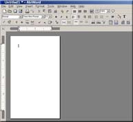
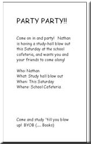
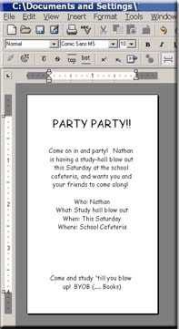

Often times, a document can't be as structured as a letter or a resume must be. Some ducuments requires a different format... or even a custom framing. Documents such as hand-outs, brochures or invitations often need that "personalized" touch in order to convey the mood to the reader properly. In this tutorial, you will learn the following steps required to produce a simple and formal party invitaiton:
Many of the same proceedures can be applied to other documents,
and should be used whenever effective. So with that said, let's get some people to attend our party!
The first step is to open a new document, (see opening a new document) and resize t
he page to a specific custom size.
Resizing the page:
Brochures and other handouts are often smaller in size than most other projects you will be making with AbiWord.
To set the page size to different specifications than the default 8.5 x 11 inches, click the following link:
To give us even more space, we'll also need to adjust the margins to compensate for our smaller page size. Click the link below to find out how.
With the page size and margins adjusted, you should now have something that looks like the figure below:

Now that our hand-out invitation is looking about the right size, it's time to start adding the type to it. Let's start our invitation with a simple heading, stating the intentions of the handout. In this case, we'll make it a study-party.
Plain or common fonts generally don't express a feeling other than formal. So we should decide on a font that fits the stlye and mood of our party invitation. Comic Sans MS is a good one... so let's change the font to Comic Sans MS, and the size of that font to 18, to make the invitation easier to read. Here's how:
Changing your font, font-size or style
Once the heading is accomplished, change the font back to size 10, and type your party information. Dont forget the most important parts: who, what, where, why, and when! Be sure to incluse any direction or other information our invitees might need!
Here's an exapmple of what one might look like, with the appropriate information included:

We've now completed the most important part: the information. Now let's make it visually interesting so
people will want to attend!
First, let's center the text to make it look less formal. A good way to do this is to center justify the text, allowing the importatn stuff to be placed in the middle of the page. Here's how:
An example of what your might look like:

Our text looks good! Now lets work on the other visual aspects of our invitation, such as a background color. This can be an important part of your invitation. By choosing a unique background color, you will separate your hand-out from other handouts with similar apearace.
(As a side note, however, it is important to note that you can save your printer ink by purchasing paper that's already colored!)
Click the link below to find out how to choose a background color:
Choose a background color by performing the follwing simple steps: Choose the color of your choice. Just remember that choosing too dark a background color will make your importnat text impossible to read. Once you have clicked on your favorite color, click "OK." You'll notice that the background of your invitation has changed to the color you have choosen.
We're almost there. We've got the text, the centered justification, and a snazzy background color, all we should need now is a picture. This will give your inviation a visual but non-text impact on those who are just to lazy to read, but might glance further at an invitation with a graphic representing a picture.
So let's place on in our document by follwing the link below:
Inserting a graphic or clipart
Choose menu item Insert ---> Picture. Browse until you find a suitable picture you would like to insert... the file format must be a .bmp (bitmap) or a .png (portable networks graphic) Once you have found a picture that you would like to represent, the click "OK."
Congratulations! You have just completed your first invitation project on AbiWord. Feel free to expirement further and produce more handouts and brochures tailored towards your specific needs. For help on printing see "Printing your document" or your printer's help manual.